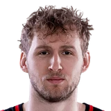

Jock LandaleHawks player
Jock Landale on the Hawks' high-octane defensive identity.
“It's a really high-octane up-the-court defense where a lot of teams throughout the course of the NBA season fall back into preserving. We have now structures where we pick up full court, three-quarter court, and half court. We tend to air on the side of always being a full-court pick-up team just because we're so versatile in how we can defend teams and we're strong, we're big, we're fast. That will be our identity. We've had some growing pains there initially, but I think the desire is there to be really good.”
On Dyson Daniels, Lou Williams
· Hawks vs. Thunder Postgame Press Conference: Jock Landale▶ Watch at 4:47